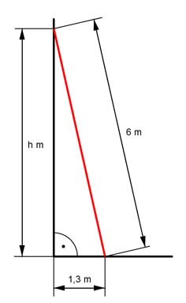

Pythagoras Aufgabe 3 Eine Leiter ist 6 m lang und steht am Fußpunkt 1,3 m von einer Wand entfernt. In welcher Höhe h in m berührt die Leiter die Wand?  62 m2 = h2 + 1,32 m2 |-1,32 m2 h2 = 62 m2 - 1,32 m2 = 34,3 m2 h = 34,3m2 h = 5,9 m
Pythagoras Aufgabe 3 Eine Leiter ist 6 m lang und steht am Fußpunkt 1,3 m von einer Wand entfernt. In welcher Höhe h in m berührt die Leiter die Wand?
